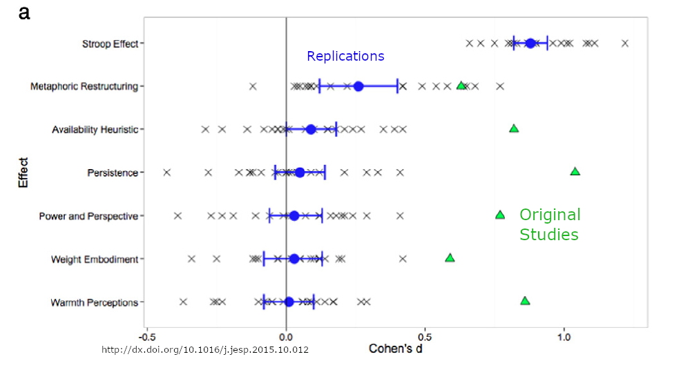
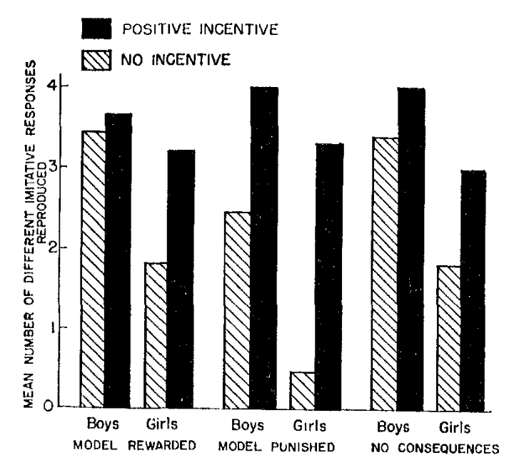

library(knitr)
library(mosaic)
library(Lock5Data)
library(supernova)
library(DiagrammeR)
library(psych)Sampling Distributions and Statistical Inference
R packages used in this chapter:
Sampling Distributions of Error
load("data/ermahtSP20.Rdata") # This file can be found on Canvas
erma <- ermahtSP20
erma$e <- erma$height - mean(erma$height)
erma$Eps <- erma$height - 67Adult Heights from NHANES Study
library(psych)
library(NHANES)
data("NHANES")
height_in <- NHANES[NHANES$Age >= 21, ]$Height*.393701
describe(height_in, fast = TRUE) vars n mean sd median min max range skew kurtosis se
X1 1 7041 66.45 3.98 66.38 52.95 78.9 25.94 0.04 -0.38 0.05\(\mu =\) 67
\(\sigma =\) 4
print(erma[ ,c(1,3)]) id height
1 ek 65.0
2 lz 69.0
3 lk 67.5
4 bw 75.0
5 kb 62.5
6 dg 68.0
7 cs 72.0
8 ao 67.0
9 wb 70.0
10 tm 72.0
11 nb 66.5
12 pm 68.5describe(erma$height, fast = TRUE) vars n mean sd median min max range skew kurtosis se
X1 1 12 68.58 3.37 68.25 62.5 75 12.5 0.13 -0.72 0.97load("data/ermahtSP20.Rdata")
mean(ermahtSP20$height)[1] 68.58333ermahtSP20$height [1] 65.0 69.0 67.5 75.0 62.5 68.0 72.0 67.0 70.0 72.0 66.5 68.5round(ermahtSP20$height - mean(ermahtSP20$height),1) [1] -3.6 0.4 -1.1 6.4 -6.1 -0.6 3.4 -1.6 1.4 3.4 -2.1 -0.1Demonstration of sampling distrubtions
To play around with sampling distributions, go to the following website, scroll down the page to the section called Sampling Distributions and Central Limits Theorem and click on the image called “Sampling Distribution of the Sample Mean (Continuous Population)”
Standard Error of the Mean (SEM or S.E.)
Population formula:
\[\sigma_{\bar{x}} = \frac{\sigma}{\sqrt{n}}\]
Sample formula:
\[s_{\bar{x}} = \frac{s}{\sqrt{n}}\]
Properties of Estimators
- Unbiased: The peak of the sampling distribution equals the parameter value
- Efficient: Most of the estimates are close to the parameter
- Consistency: The more observations the closer the estimates are to the parameter, or said differently, the bigger the sample size the narrower the sampling distribution
Assumptions of Linear Models
- Normality
- Independence of Errors
- Identical Distribution of Errors/Homogeneity of Variance
- Unbiased Errors
Normality
We assume the ERRORS are normally distributed
This is reasonable because:
- abundance of empirical evidence of normal errors
- possible to transform variables to have normal errors
- Central Limits Theorem
Central Limits Theorem - sampling distributions of the sample mean approximate the normal distribution regardless of the shape of the population distribution.
The larger the number of components that go into an average the better this approximation (think unmeasured factors and sample size).
Independence of Errors
- Knowing one observation’s error tells us nothing about another observation’s error
- Violation Examples
- Positive: Couple’s political attitudes
- Negative: Couple’s housework estimates
- Care whenever observations are linked in any way
Identical Distribution of Errors
- Equal variances for all groups
- size of error not related to size of model prediction
- Violations: counts, reaction times, money
- Homogeneity of Variance
Unbiased Error
- Mean of Errors = 0
- Otherwise just becomes part of MODEL
- A researcher issue rather than a data analysis or statistical issue
- So YOU take care to ensure no bias
Estimator for \(\sigma^2\)
\[ \hat{\sigma}^2 = s^2 = \frac{SSE}{n-1} = \sum\frac{(Y_i - \bar{Y})^2}{n - 1} \] \[ \hat{\sigma}^2 = MSE = \frac{SSE}{n-p} = \sum\frac{(Y_i - \hat{Y_i})^2}{n - p} \]
Why \(n-p\) instead of \(n\)?
\[ DATA = MODEL + ERROR \]
\[ n = p +(n-p) \]
- Only \((n-p)\) independent pieces of information left in ERROR
Hypothesis Testing vs. Modeling
include_graphics("images/repCrisis.png")A Problems in Science
include_graphics("images/manylabs3.png")
Overview
- Hypothesis Testing and p-values
- Modeling
- Linear Regression
Hypotheses
- An hypothesis is a testable statement about a population.
- It takes the form of a prediction about the value or range of values a parameter takes.
The p-value
A p-value is the probability of obtaining data as extreme or more extreme as obtained in the sample given that the null hypothesis is true.
p-value :
\[ p = P(D | H_0) \]
Observational Learning Albert Bandura (1965)
Influence of Models’ Reinforcement Contingencies on the acquisition of Imitative Responses
In order to test the hypothesis that reinforcements administered to a model influence the performance but not the acquisition of matching responses, groups of children observed an aggressive film-mediated model either rewarded, punished, or left without consequences. A postexposure test revealed that response consequences to the model had produced differential amounts of imitative behavior. Children in the model-punished condition performed significantly fewer matching responses than children in both the model-rewarded and the no-consequences groups. Children in all 3 treatment conditions were then offered attractive reinforcers contingent on their reproducing the model’s aggressive responses. The introduction of positive incentives completely wiped out the previously observed performance differences, revealing an equivalent amount of learning among children in the model-rewarded, model-punished, and the no-consequences conditions.
Hypotheses
\(H_0\): ???
\(H_1\): It was predicted that reinforcing consequences to the model would result in significant differences in the performance of imitative behavior with the model-rewarded group displaying the highest number of different classes of matching responses, followed by the no-consequences and the model-punished groups, respectively.
\(H_2\): In accordance with previous findings (Bandura et al., 1961, 1963a) it was also expected that boys would perform significantly more imitative aggression than girls.
\(H_3\): It was predicted, however, that the introduction of positive incentives would wipe out both reinforcement-produced and sex-linked performance differences, revealing an equivalent amount of learning among children in the three treatment conditions.
Figure 1. Mean number of different matching responses reproduced by children as a function of positive incentives and the model’s reinforcement contingencies.
include_graphics("images/banduraBarplot.png")
Table 1
ANOVA Results for Performance Differences
| Source | df | MS | F |
|---|---|---|---|
| Treatment (T) | 2 | 1.21 | 3.27* |
| Sex (S) | 1 | 4.87 | 13.16** |
| T X S | 2 | .12 | <1 |
| Within groups | 60 | .37 |
Note: * p < .05; ** p < .001.
Table 2
Comparison of Pairs of Means Between Treatment Conditions (t values)
| Performance | Reward vs. punishment | Reward vs none | Punishment vs none |
|---|---|---|---|
| All | 2.20** | 0.55 | 2.25** |
| Boys | 1.05 | 0.19 | 1.24 |
| Girls | 2.13** | 0.12 | 2.02* |
What does the \(p\)-value Tell Us?
the probability of obtaining a \(F\)-value as extreme, or more extreme as 3.27, assuming the null hypothesis is true
Said differently, in a world in which different reinforcement contingencies have exacly no effect on the number of aggressive imitations, a \(F\)-score of 3.27 or greater would occur less than once in one thousand times in a very large number of randoms samples of size 66.
What do \(p\)-values NOT tell Us?
Recall:
\[ p(D | H_0) \ne p(H_0 | D) \]
Lottery
W = winning the lottery
T = Have a valid lottery ticket
\[ p(W|T) \ne p(T|W) \]
Lottery probabilities in Perspective
- The probability of winning the MegaMillions Georgia Lottery was \(3.03 \times 10^{-9}\) on 1/27/2019.
- The probability of being struck by lightening in your lifetime is \(\frac{1}{3000}\) ( \(3.33 \times 10^{-4}\) ).
- The probability of being struck by lightening THIS YEAR is \(1.43 \times 10^{-6}\).
Cognitive Errors in Significance Testing
False belief that \(p\) is the probability that a result happened by chance.
False belief that rejecting the null means the likelihood that this decision was wrong is less than 5%.
False belief that a \(p\) value give the probability that the null hypothesis is true.
False belief that \(1-p\) is the probability that the alternative hypothesis is true.
False belief that \(1-p\) is the probability of finding the same result in another sample.
Model Comparison
- Model A:
\[ Y_i = \beta_0 + \varepsilon_i \]
- Model C:
\[ Y_i = B_0 + \varepsilon_i \]
\[ H_0: \beta_0 = B_0 \]
Power
http://www.artofstat.com/webapps.html
Punchline
- All statistical inference for model comparisons is the same!
- Compute PRE, F* from SSE(A) and SSE(C)
- If PRE & F* surprising, then reject Model C
- Always consider Power
- Now let’s build some interesting MODELS (Golems)!